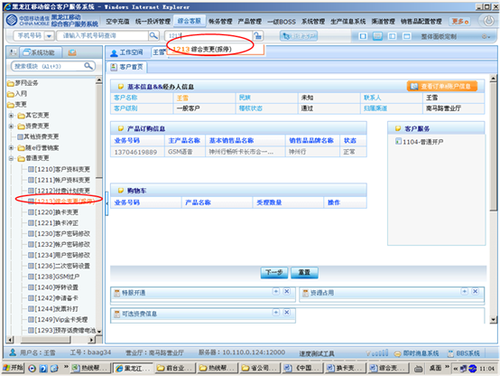
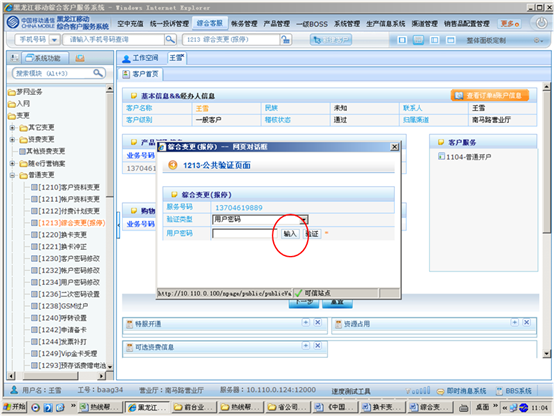
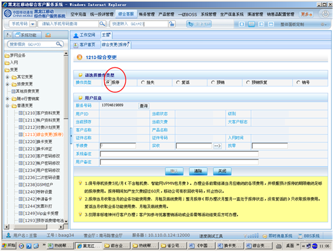
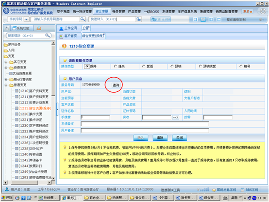
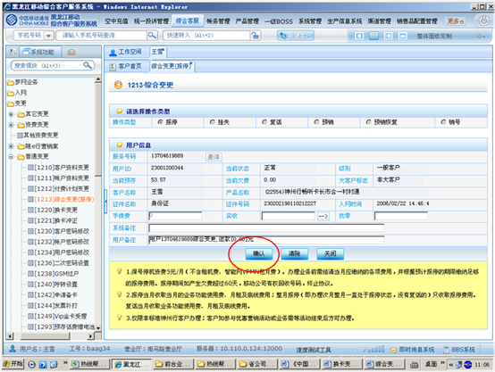
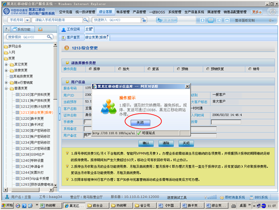
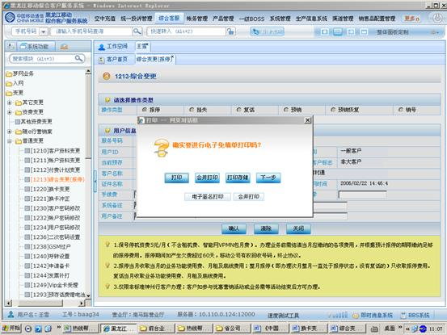

1、进入方式
在“请输入手机号码查询”处输入客户的手机号码，点击查询按钮，点击综合客服-普通变更-综合变更（报停），或在“快速转入”处输入代码1213综合变更（报停），点击“回车”确定。
2、界面形式及操作步骤说明
（1）在“请输入手机号码查询”处输入客户的手机号码，点击查询按钮，点击综合客服-普通变更-综合变更（报停），或在“快速转入”处输入代码1213综合变更（报停），点击“回车”确定。

（2）点击“输入”，由客户通过密码小键盘输入服务密码。

（3）在操作类型处点击“报停”。

（4）点击“查询”。

（5）点击“确认”。

（6）显示操作提示，需提示客户“请及时交纳费用，避免拆机，报停、复话可通过10086、黑龙江移动网站办理”，点击“关闭”。

（7）根据客户本次是否办理多个业务，点击“打印”或“合并打印”或“打印存储”。

（8）点击“确定”提交本次操作。